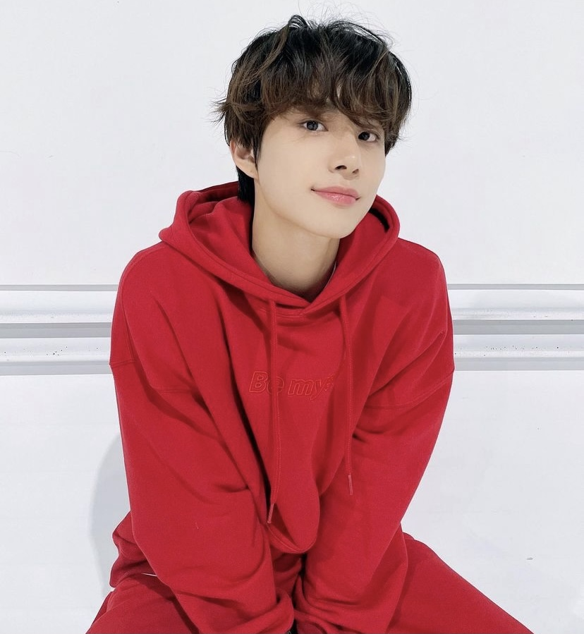

김정우
Kim Jung-woo (Hangul: 김정우) referred to as Jungwoo (Hangul: 정우) is a South Korean singer and dancer born in Sanbon-dong, Gunpo-si, Gyeonggi-do on February 19, 1998 and grew up in Gimpo-si, Gyeonggi-do. He is the main vocalist and the lead dancer of NCT U, and the lead vocalist and lead dancer of NCT 127.
오복이